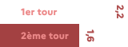
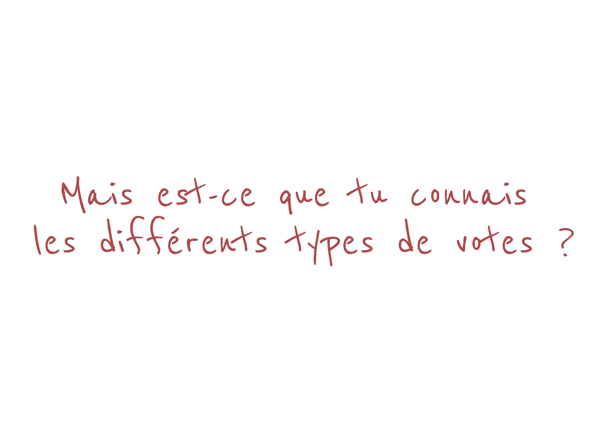

PROCURATION
Si tu n'es pas là le jour du vote, tu peux voter par procuration. Faire procuration c'est un acte écrit par lequel tu donnes le pouvoir à une autre personne de voter à ta place.
Tu peux réaliser cette démarche en ligne !

Nombres de demandes de procurations durant l'élection présidentielle de 2017, en millions.
À ton avis, quelle tranche d'âge fait le plus de demandes de procuration ?
